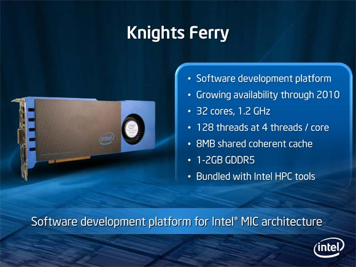

Over the summer of 2011, I had the chance to meet a couple of Intel employees and discuss, for the first time, Intel’s “Many Integrated Core” technology for High Performance Computing, it’s applications, and what programmer’s would have to do to take advantage of the new hardware. Not only that, I got to hold one of Intel’s newest innovations in HPC and it absolutely floored me. I’m not an expert on the hardware, so I’ll let one of Intel’s promotional images provide the summary for me.

For anyone new to the topic, it’s important to know that this new multiprocessor architecture doesn’t confer any serious speed advantages for traditional, serial programs (this applies to newer home architecture like Intel’s i7 as well). If your software performs operations one-at-a-time, in-order you will only be using one of these processors while the other’s sit idle. To take advantage of this new direction in computing, one must devise algorithms that split problems up into an arbitrary number of chunks that can be solved independently and in parallel on multiple processors/cores. For anyone without an understanding about why parallelism has quickly become a necessity, I’d recommend reading this article.
Most Computer Science bachelor’s programs offer a single course on parallelism, with much of that time spent on the history of the field (including old algorithms) instead of on modern design patterns, data structures and system issues. Not only is Intel at the forefront of new hardware in parallel computing, they also have the leading learning center on the topic – the Intel Academic Community!
Currently Intel has over 300 free pieces of courseware that include things like “lectures, demos, notes, and complete classes.” Because these are resources compiled by Intel, you can trust that what’s available is highly relevant, up to date, and of high quality – something that’s not so easy to guarantee when finding lectures notes through Google.
Some notable pieces are the Introduction to Parallel Programming Video Series and source code for a parallel algorithm designed to solve The Traveling Baseball Fan Problem.
Along with courseware, Intel has a number of videos available to stream that cover various topics in the field of parallelism – teaching it, its necessity, and visual demonstrations of parallel algorithms.
I have never seen a forum like the one Intel has. I have visited several other technical forums but Intel forum is something else.
Today, software developers are often judged based on their contributions to the online community. Viewing a developer’s github, stackoverflow account, YouTube videos, or blog can give a good idea of how passionate a developer is about a topic area. This is definitely only a “rule of thumb” – but nevertheless a good one.
Intel offers a measurable way to track community interaction on one of the best parallel computing forums on the internet. Users are ranked by points they earn for forum posts, content contributions, contest entries, and how other user’s rate your contributions (among other things). For someone interested in this field, I would argue that contributing in this community would be much more useful for your own growth and as a metric for your passion about the field than anywhere else on the internet.
Intel has a huge stake in the next generation of programmers – and it shows. They provide the most comprehensive resource for learning parallel programming in the world. Not only does Intel have a huge stake in the success of “the parallel generation” of computing – we all do. Parallelism and high performance computing are needed to solve some of Science’s and humanity’s greatest problems and ununderstood phenomena – medical imaging, genomics research, climate simulation, financial simulations, and problems in astrophysics.